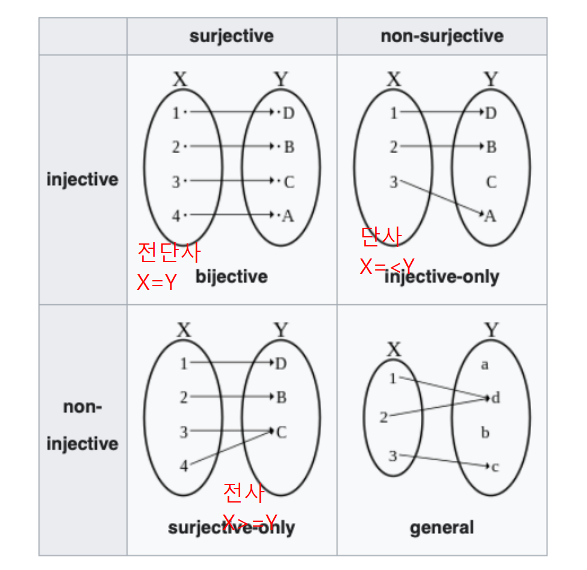

02wk: 측도론 intro (2)
해당 강의노트는 전북대학교 최규빈교수님 AP2023 자료임
예비개념1: 귀류법
- 귀류법: 니 논리 대로면… <- 인터넷 댓글에 많음..
님 논리대로면..
- XXX가 문제 없으면 서울 전체가 문제가 없고 (애초에 서울은 문제도 아니라는데 왜 이소리는 하고 계신지 모르겠지만)
- 수도권 모 대학이 문제가 없으면 전체가 문제가 없겠네요?
- 지방도 1개 대학이 문제가 없으니 전체가 문제 없겠네요?
와우! 모든 문제가 해결되었습니다! 출산율 감소로 인한 한국대학의 위기가 해결되었.. 아니 애초에 위기가 없었군요!.
어휴.. ㅠㅠref: 하이브레인넷
예비개념2: 일반화
- 연필의 정의: 필기도구의 하나. 흑연과 점토의 혼합물을 구워 만든 가느다란 심을 속에 넣고, 겉은 나무로 둘러싸서 만든다. 1565년에 영국에서 처음으로 만들었다.
- 질문: 아래는 연필인가?

- 연필을 정의하는 ’속성’을 개념으로 확장하자! (기본 연필의 정의를 포함하면서) \(\to\) cardinality
cardinality
- \(A=\{2,4,6\}\) \(\Rightarrow\) \(|A|=3\), \(A\) has a cardinality of 3.
- \(A=\{1,2,3,4,\dots\}=\mathbb{N}\) \(\Rightarrow\) \(|A|=?\)
- Cardinal number: 유한집합에서의 “갯수”라는 개념을 좀 더 일반화 하여 무한집합으로 적용하고 싶다.
- 유한집합: 우리가 친숙한 size 와 그 뜻이 같음
- 무한집합: 무한집합의 경우는 그 동작원리가 조금 더 복잡함
- 질문: \(|\mathbb{Q}| < |\mathbb{Q}^c|\) ??
Bijection, injection and surjection (예비학습)

- 용어 정리
- surjective = onto = 전사 = 위로의 함수
- injective = one-to-one = 단사 = 일대일 함수
- bijective = one-to-one and onto, one-to-one correspondence = 전단사 = 일대일 대응
- 따지는 방법:
- 단사: 함수 \(f\)는 \(X\)에서 \(Y\)로 향하는 단사함수이다. \(\Leftrightarrow\) \(\forall x_1,x_2 \in X\): \(x_1\neq x_2 \Rightarrow f(x_1)\neq f(x_2)\)
- (\(\star\))전사: 함수 \(f\)는 \(X\)에서 \(Y\)로 향하는 전사함수이다. \(\Leftrightarrow\) \(\forall y \in Y ~\exists x \in X\) such that \(f(x)=y\).
- 성질1: 어떤함수가 전사함수 & 단사함수 \(\Rightarrow\) 전단사함수
- 성질2:
- 집합 \(X\)에서 집합 \(Y\)로 가는 단사함수 \(f\)가 존재한다. \(\Rightarrow\) \(|X| \leq |Y|\)
- 집합 \(X\)에서 집합 \(Y\)로 가는 전사함수 \(f\)가 존재한다. \(\Rightarrow\) \(|X| \geq |Y|\)
(예비학습 끝)
- 성질1~2로 유추하면 아래와 같은 사실을 주장 할 수 있지 않을까?
- 집합 \(X\)에서 집합 \(Y\)로 향하는 전단사함수가 존재한다 \(\Rightarrow\) \(|X|=|Y|\)
- 그렇다면 우리가 주장하고 싶은 것은 아래와 같이 된다.
- 유리수집합의 무리수집합의 cardinality는 다르다.
- 유리수집합과 무리수집합사이의 전단사함수는 존재할 수 없다.
유리수집합의 카디널리티
- 우리가 궁극적으로 궁금한 것
- 유리수집합과 무리수집합의 카디널리티는 다를까?
- 그냥 궁금한 것
양의 정수의 집합, 음의 정수의 집합, 정수의 집합, 짝수의 집합, 홀수의 집합의 카디널리티는 어떠할까?
미리보는 답 ㅎ 카디너릴티는 다 똑같다 ㅎ
- (예제1)
집합 \(X=\{1,2,3\}\), \(Y=\{2,4,6\}\)을 생각하자. 적당한 함수 \(f\)를 아래와 같이 정의하자.
- \(f(1)=2\)
- \(f(2)=4\)
- \(f(3)=6\)
아래의 질문에 대답해보자.
- (단사) 함수 \(f\)는 정의역의 모든 값에 대해 함수값이 모두 다른가? // \(\forall x_1,x_2 \in X\), \(x_1\neq x_2\) \(\Rightarrow\) \(f(x_1)\neq f(x_2)\)?
- (전사) 함수 \(f\)는 공역=치역인가? // \(\forall y \in Y~ \exists x \in X\) such that \(f(x)=y\).
1의 질문과 2의 질문이 모두 맞으므로 함수 \(f\)는 전단사 함수이다. 집합 \(X\)에서 집합 \(Y\)로 가는 전단사 함수가 존재하므로 집합 \(X\)와 집합 \(Y\)의 카디널리티는 동일하다. 즉 위의 예제1에서 \(Y\)의 카디널리티는 3이다!
- (예제2)
집합 \(X=\{1,2,3,\dots \}\), \(Y=\{2,4,6,\dots \}\)을 생각하자. 적당한 함수 \(f\)를 아래와 같이 정의하자.
- \(f(1)=2\)
- \(f(2)=4\)
- \(f(3)=6\)
- \(\dots\)
아래의 질문에 대답해보자.
- (단사) 함수 \(f\)는 정의역의 모든 값에 대해 함수값이 모두 다른가? // \(\forall x_1,x_2 \in X\), \(x_1\neq x_2\) \(\Rightarrow\) \(f(x_1)\neq f(x_2)\)?
- (전사) 함수 \(f\)는 공역=치역인가? // \(\forall y \in Y~ \exists x \in X\) such that \(f(x)=y\).
1의 질문과 2의 질문이 모두 맞으므로 함수 \(f\)는 전단사함수이다. 집합 \(X\)에서 집합 \(Y\)로 가는 전단사 함수가 존재하므로 집합 \(X\)와 집합 \(Y\)의 카디널리티는 동일하다.
- \(\aleph_0\) (알레프 널, 혹은 알레프 제로라고 읽음)
- 자연수집합 \(\mathbb{N}\)의 카디널리티는 \(\aleph_0\)이다. 즉 \(|\mathbb{N}|=\aleph_0\).
- 짝수인 자연수 집합의 카디널리티는 \(\aleph_0\)이고, 홀수인 자연수 집합의 카디널리티는 \(\aleph_0\)이다.
- 정수집합 \(\mathbb{Z}\)의 카디널리티는 \(\aleph_0\)이다. 즉 \(|\mathbb{Z}|=\aleph_0\).
- 느낌: \(\aleph_0\)를 2배,3배,4배 하여도 \(\aleph_0\)이다.
- 즉 무한집합의 경우, 본인과 카디널넘버가 같은 진부분집합(자기자신을 제외한 부분집합)이 존재할 수 있다. (유한집합에서는 불가능하겠지)
- 무한집합의 정의: 집합 \(A\)가 무한집합이다. \(\Leftrightarrow\) \(A\)와 동일한 카디널리티를 가지는 \(A\)의 진 부분집합이 존재한다.
- (예제3)
원소의 수가 \(n\)인 임의의 유한집합 \(A\)에 대하여 \(|A|=n\) 이다.
- (예제4)
유리수집합의 카디널리티는 얼마인가? (https://en.wikipedia.org/wiki/Rational_number)
집합 \(X\)를 자연수의 집합이라고 하자. 집합 \(Y\)를 아래그림에 있는 숫자들의 집합이라고 하자.1
1 그래서 일단 집합 \(Y\)는 양의 유리수의 집합을 포함한다

예를들어 집합 \(X\)와 집합 \(Y\)를 앞의 몇개만 써보면
- \(X=\{1,2,3,4,5,6,\dots\}\)
- \(Y=\{1,\frac{2}{1},\frac{1}{2},\frac{3}{1},\frac{2}{2},\frac{1}{3},\dots \}\)
함수 \(f\)를 아래와 같이 정의하자.
- \(f(1)=1\)
- \(f(2)=2/1\)
- \(f(3)=1/2\)
- \(f(4)=3/1\)
- \(f(5)=2/2\)
- \(f(6)=1/3\)
- \(\dots\)
함수 \(f\)는 \(X\)에서 \(Y\)로 향하는 전단사함수이다. \(\Rightarrow\) \(|X|=\aleph_0=|Y|\)
(관찰) 임의의 양의 유리수의 집합 \(\mathbb{Q}^+\)는 모두 \(Y\)에 포함되어 있다. \(\Rightarrow\) \(X \subset \mathbb{Q}^+ \subset Y\) \(\Rightarrow\) \(|\mathbb{Q}^+|=\aleph_0\)
(생각) 그럼 음의 유리수의 집합 \(\mathbb{Q}^-\)의 카디널넘버 역시 \(\aleph_0\)이다. 즉 \(|\mathbb{Q}^-|=\aleph_0\).
(결론) 그럼 유리수의 카디널넘버는 \(\aleph_0\) 이다. [\(\mathbb{Q} = \mathbb{Q}^+ \cup \{0\} \cup \mathbb{Q}^-\)] 좀 더 자극적으로 말하면 “자연수의 갯수와 유리수의 갯수는 같다” 라고 말할 수 있다.
- 조금 무식하게 쓰면 아래와 같이 쓸 수 있다.
- \(\aleph_0 + 1 = \aleph_0\)
- \(\aleph_0 \times 2 = \aleph_0\)
- \(\aleph_0 \times \aleph_0 = \aleph_0^2 = \aleph_0\) (위의 격자를 생각..)
실수집합의 카디널리티
- 아래의 관계가 성립했다.
- \(|\mathbb{N}| = \aleph_0\)
- \(|\mathbb{N}\cup \{0\}| = \aleph_0\)
- \(|\mathbb{Z}| = \aleph_0\)
- \(|\mathbb{Q}| = \aleph_0\)
- 그렇다면 아래는 어떠할까?
\[|\mathbb{R}|=??\]
(주장) 실수에 포함된 카디널넘버는 유리수의 카디널넘버 보다 크다.
- \(\mathbb{Q}\)에서 \(\mathbb{R}\)로 가는 단사함수는 존재하지만 전사함수는 존재할 수 없음을 보이면 된다.
- \(\mathbb{N}\)에서 \(\mathbb{R}\)로 가는 단사함수는 존재하지만 전사함수는 존재할 수 없음을 보여도 된다.[\(|\mathbb{Q}|=|\mathbb{N}|=\aleph_0\)]
(단사)
자연수에서 실수로 가는 단사함수는 존재한다. (자연수는 실수의 부분집합이니까)
(전사)
소망: \(\mathbb{N}\)에서 \(\mathbb{R}\)로 향하는 전사는 존재할 수 없음을 보이고 싶음.
소망2: 그런데 \(\mathbb{N}\)에서 \([0,1]\)로 향하는 전사가 존재할 수 없음을 보여도 충분함.
\([0,1] \subset \mathbb{R}\) 이므로
전략: \(\mathbb{N}\)에서 \([0,1]\)로 가는 전사가 존재한다고 가정하고 모순을 이끌어 내자.
1. 아래와 같은 주장을 하는 가상의 인물을 세움:
\(\mathbb{N}\)에서 \([0,1]\)로 향하는 전사함수가 존재한다.
2. 그 가상의 인물이 하는 주장을 잘 생각해보면 아래와 같음
\(f\)는 정의역이 자연수이고 공역이 실수인 함수이므로 아래와 같은 형태일 것임.
- \(f(1)=0.2344253456\cdots\)
- \(f(2)=0.3459837981\cdots\)
- \(f(3)=0.5452349871\cdots\)
- \(\dots\)
그 가상의 인물의 주장대로라면
\[[0,1]=\{f(1),f(2),f(3),\dots\}\]
이라는 의미임. [다시 말하면 \([0,1]\) 사이의 모든 실수는 “셀수있다”라는 의미임]
3. 전사함수의 정의에 의하여 아래가 성립해야 함
\(\forall y\in [0,1] ~\exists x \in \mathbb{N}\) such that \(f(x)=y\)
아래의 원리에 따라서 \(y=0.x_1x_2x_3\cdots\)를 뽑는다면?
- \(y\)의 첫번째 소수점의 값 \(x_1\)은 \(f(1)\)의 첫번째 소수점과 다르게 한다. \(\Rightarrow\) \(y\neq f(1)\) \(\Rightarrow\) \(y \notin \{f(1)\}\)
- \(y\)의 두번째 소수점의 값 \(x_2\)은 \(f(2)\)의 두번째 소수점과 다르게 한다. \(\Rightarrow\) \(y\neq f(1)\) and \(y\neq f(2)\) \(\Rightarrow\) \(y \notin \{f(1), f(2)\}\)
위의 예시에서 y=0.245……
이러한 \(y\)는 분명히 실수이지만 \(y \notin \{f(1),f(2),f(3),\dots,\}\) 이다.2
2 모순이네?
무리수집합의 카디널리티
(주장) 무리수집합의 카디널리티는 \(\aleph_0\)가 아니다.
(쉐도복싱) 무리수집합의 카디널리티가 \(\aleph_0\) 이라고 하자.
- \(\mathbb{R} = \mathbb{Q} \cup \mathbb{Q}^c\)
- \(|\mathbb{Q}|=\aleph_0\) 이므로 \(\mathbb{Q}\)와 \(\mathbb{N}\)사이에는 전단사함수가 존재함.
- \(|\mathbb{Q}^c|=\aleph_0\) 이므로 \(\mathbb{Q}^c\)와 \(\mathbb{N}^{-}=\{-1,-2,\dots\}\)사이에는 전단사함수가 존재함.
- 따라서 \(\mathbb{Q} \cup \mathbb{Q}^c\) 와 \(\mathbb{N} \cup \mathbb{N}^-\) 사이에는 전단사함수가 존재함. (모순)
